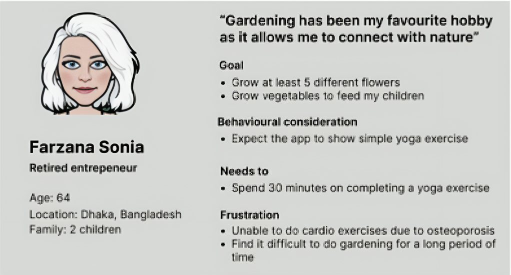

SenioWell is a workout application designed to provide simple exercises for seniors to prevent further stages of osteoporosis and arthritis.
In this academic project, I collaborated with a team of two to develop a complex and interactive user interface.
This involved research to identify suitable exercises and creating prototypes to visualize the app's interactive features.
Research
CSS selector:
Sample code:
Rendered element:
Research
Personas
To determine the types of exercises to implement in the app, I decided to create personas to show potential objectives and tasks that seniors may have when engaging with the app.

Persona for senior who experience oesteoporosis and arthritis
Design Process
CSS selector:
Sample code:
Rendered element:
Design Process
Initial Prototype
I integrated a scrolling animation effect into the 'finish' button, allowing seniors to input their remaining information seamlessly.
As a result, this ensured a smoother and quicker sign-up process, as seniors no longer need to manually scroll down to complete their profile, thereby enhancing their overall experience.
I implemented a new color for the bookmark icon to signify when a workout has been bookmarked.
This visual cue made it easier for users to identify which workouts they've saved for future reference.
I removed the resting period timer to reduce the number of steps required for the workout completion process.
This granted users more flexibility in managing their rest periods between exercises, ensuring they're adequately prepared for their next exercise.
Initial interaction for sign up processInitial interaction for bookmarking an exerciseInitial interaction for completing an exercise
Refinement
I adjusted our workout program to better suit seniors dealing with osteoporosis or arthritis.
By emphasizing pilates, yoga, and cardio exercises, my updated approach ensures a more tailored fitness regimen for their specific need.
Changing the content in the exercise page
I enhanced the text area where users can specify any allergies they may> have.
This improvement ensures that users can readily identify it as a designated area for inputting allergies and understand the purpose behind its implementation.
Improving the layout of the medical detail
Final Process
By removing the scrolling effect, seniors found it easier to input their personal information since it eliminated distraction.
Seniors recovered faster and safely because the exercises selected were proven to be suitable for seniors dealing with osteoporosis and arthritis, based on reputable sources such as Healthline and Harvard Health.
Seniors found it easier to exercise more regularly, thanks to motivational quotes provided after completing each exercise.
Final interaction for sign up processFinal interaction for bookmarking an exerciseFinal interaction for completing an exercise
Reflection
CSS selector:
Sample code:
Rendered element:
Reflection
Thanks to this project, I have deepened my understanding of design principles, usability components, and UI guidelines.
If I have more time, I would like to recruit seniors to test my app and use the think-aloud method to understand their decisions.
In addition, I would also like to incorporate a music feature to make it easier for seniors to exercise while enjoying.
Bio
Bio profile
Bio Information
Hi, I'm Frentzen Taslim.
I love to craft design solutions with purpose and impact to bring positive and enjoyable experiences to the users.
I am currently an Interactive Art and Technology student at Simon Fraser University.
My academic journey has been marked by a diverse range of projects where I've enthusiastically applied my creativity and problem-solving skills.
Collaborating with my team members, I've crafted enjoyable digital experiences - from user research to wireframing and prototyping in Figma and ProtoPie, and coding websites using HTML and CSS.
Outside of design, I usually play chess as it involves strategic thinking, problem-solving, and attention to detail which helps to enhance my skills.
I believe that design is about prioritizing user empathy and understanding their perspective to create engaging and impactful experiences.
With a strong commitment to continuous learning, I eagerly anticipate new challenges that keep me motivated and engaged on my journey to success.
Contact Me
Frentzen Taslim
fht2@sfu.ca
236-863-8122
RESUME LINK
P01 - Brand Component
Fonts
Futura
Helvetica
Color Palette
Seljuk Blue - #3A8DEF
Highlight the title, color my hover state of the button
Drift on the sea - #241615
Draw the most important point on my resume, color my default state of the button